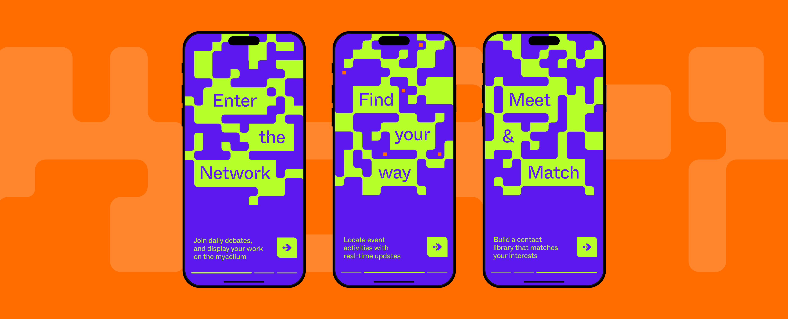
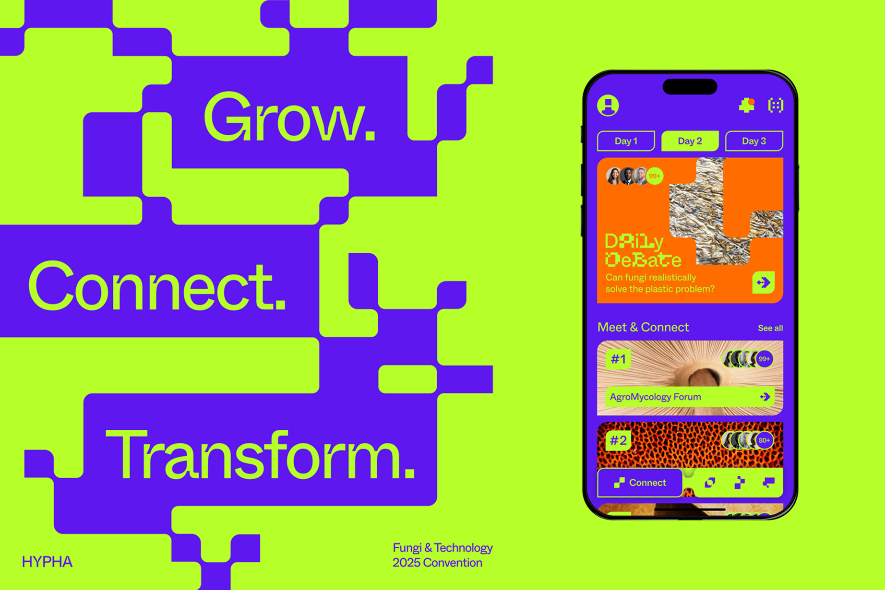
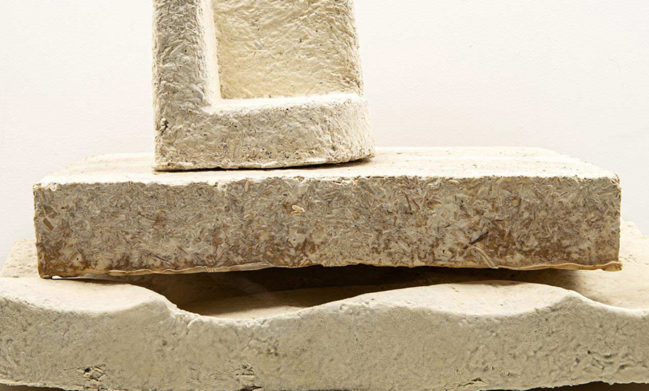
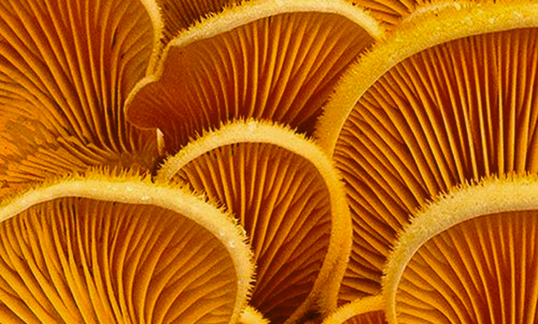
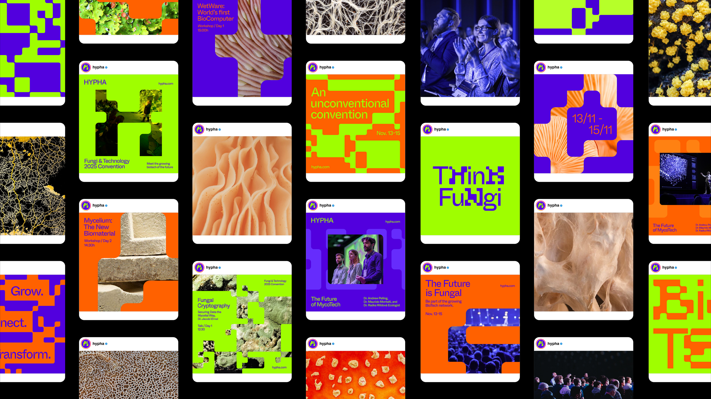
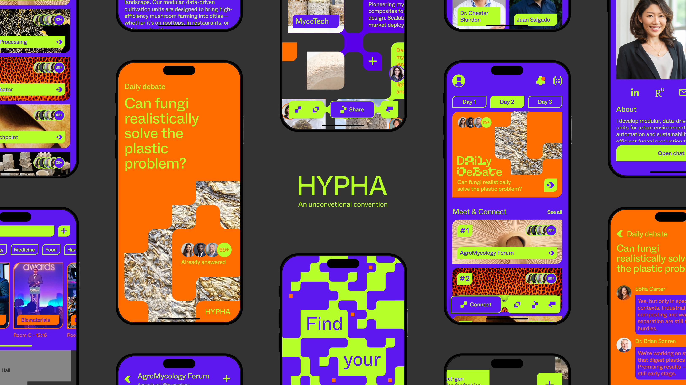
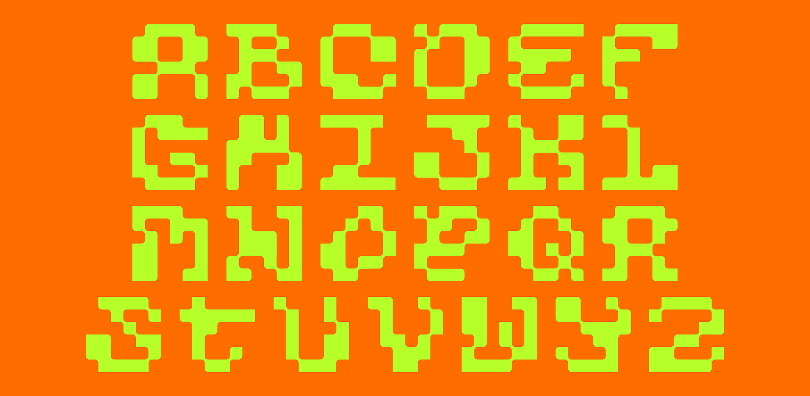
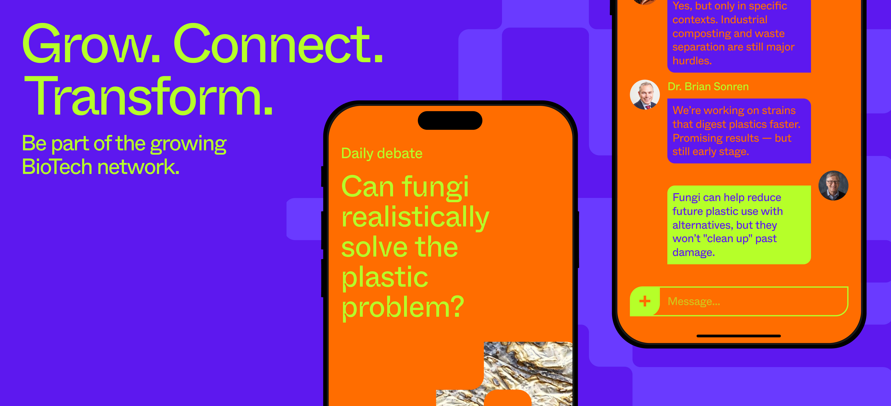

HYPHA


The brief consisted on creating the identity and digital applications of a three-day festival.
In my case, I chose to explore the intersection of fungi and technology.
The graphic system was designed for a three-day scientific event held in London, UK, dedicated to elevating the role of mycology within the scientific community, exploring its benefits and applications.
As the event encouraged connection and networking, the brand identity was built around the concept of fungal-based systems. Combining organic, mutant-like forms with a pixel-tech grid, the visual language embraced a living and disruptive personality that reflected the event's experimental spirit.




Rooted in the fundamentals of biology, the brand is designed to grow, adapt, and evolve.
Inspired by mycelial networks found in the fungal world, a connective graphic resource weaves through the typography and grid system, visually linking blocks of content. This concept extends into the festival’s custom typeface, HYPHA Morph, which appears alongside the primary font to introduce a sense of mutation and growth on the applications.


The custom typeface, HYPHA Morph, was developed using a modular grid and a joint-like effect that embodies the festival's organic/tech duality.
Its characters are used to mutate the logo applications, highlight bold phrases, and even frame imagery.
The app of the festival had the main objective of connecting people and innovations.
The app had four main screens: Connect, Discover, Share and Chat.
Connect hosted a daily debate: a question was put to all attendees, who could share their opinions and gain visibility without needing to give a talk of their own. Each question stayed open throughout the day, so the conversation kept growing between talks and anyone could join in at any moment. It was also where you could follow forums on the technology areas covered by the event and access your contact list.
Discover featured the event map, where you could watch attendees' stories, with photos and videos from talks and stands, in real time.
Share took an unconventional approach to networking: a "mycelium wall" where you could post your personal or company profile, connect with and follow others, and gain exposure.
Chat let you hold one-on-one conversations or take part in the forums you had joined.

Credits
Tutors:
Joan Baró, Jofre Mañé, Jorge Wimes.
Client:
IDEP Barcelona.
kos


buggies